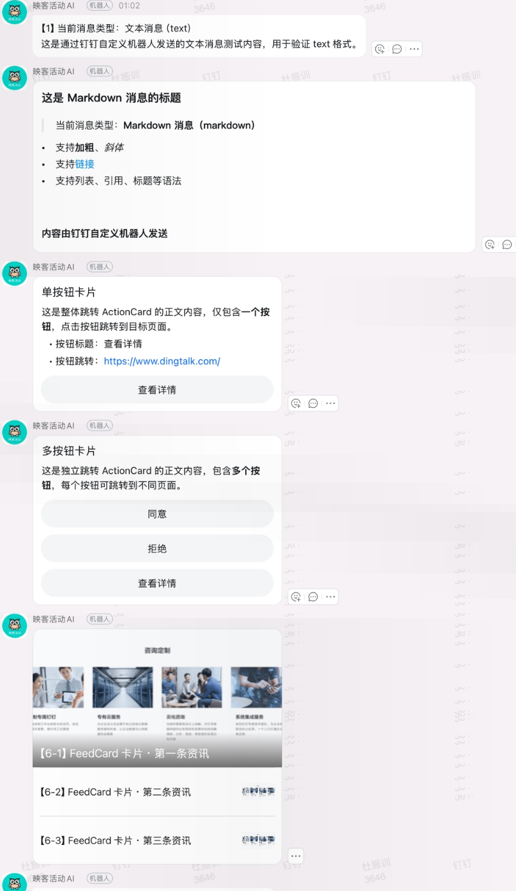

SHARING DECK / SYSTEM ARCHITECTURE
把 AI 接进钉钉
DWS 与钉钉机器人架构与流程
项目架构与核心流程分享
理解钉钉消息如何进入系统、如何路由到 Pi / Codex，以及“打开 AI”为什么能够自动完成机器人入群。
分享目标
两件事搞明白：DWS 怎么用，Agent 怎么跑
主线一DWS 怎么用
认证与身份 → 事件监听 → 历史消息 → 媒体与文件 → 机器人管理。
auth status / login --device / contact +me；event consume、+listen-im；chat message list、+search-msg；list-by-ids、download-media、drive download；bot find、+chat-add-bot、+chat-bots、+chat-remove-bot。
主线二Agent 怎么跑起来
统一入口 runAgent 分发三个 Agent，各自启动方式与通信协议不同。
Pi：pi --mode rpc，stdin/stdout JSON-RPC，支持 steer / abort；Codex：codex exec 单轮，codex app-server 可长连接 RPC；OpenCode：opencode run --format json，靠 --session 续接。
串起来一条消息的完整链路
私聊Stream → 去重 → 鉴权
→
群聊事件 → 过滤 → targets → 队列
→
打开 AI查机器人 → 必要时加群 → 写规则
→
回复互动卡片 / Webhook 推送
再看 Session 隔离与 Agent 切换：会话按 Agent 分开存，切换不串线。
分享完你应该能：① 自己用 DWS 命令查数据；② 说清 Pi / Codex / OpenCode 各自怎么启动和通信；③ 跟着一条消息走完整个链路。
第一章 · 项目总览
项目整体架构
从消息入口、Worker 进程、DWS CLI、核心路由到 Pi / Codex / OpenCode 执行层与持久化的完整视图。
第一章 · DWS 基础
DWS 是什么？
DingTalk Workspace CLI
DWS 是面向钉钉工作台能力的命令行工具，负责认证、群聊、联系人、机器人和事件流操作。
本项目中的位置
DWS 不执行 AI，它负责把群消息送进 Worker，并提供群、成员、机器人等管理能力。
理解 DWS 的关键：它是消息与钉钉资源的控制入口，不是模型执行引擎。
第一章 · DWS 实战命令 · 1
DWS 事件：两种消费方式
原始消费dws event consume user_im_message_receive_group_all
返回完整事件信封：seq、event_id、subscribe_id、data（JSON 字符串）与 headers。
简化监听dws event +listen-im --kind all-group
返回扁平字段：message_id、conversation_id、sender、content、create_time。
| 事件类型 | 监听方式 | 场景 |
|---|
| user_im_message_receive_group_all | --kind all-group | 全量群消息 |
| user_im_message_receive_o2o_all | --kind all-direct | 私聊消息 |
| user_im_message_receive_user | --kind sender | 指定人消息，群聊与私聊都会返回 |
consume 拿到的是原始信封，listen-im 拿到的是整理后的 NDJSON，日常监听优先用 listen-im。
第一章 · DWS 实战命令 · 2
群消息事件
dws event +listen-im --kind all-group
[event] ready event_key=user_im_message_receive_group_all
{"type":"user_im_message_receive_group_all",
"event_id":"3eb1ce4b981348529e8c48759b9b2cf2",
"message_id":"msgYqeVn7+T9BhNImpr3b8NFA==",
"conversation_id":"cidg39FaVefjLlwptxUXexldA==",
"sender":"师超",
"sender_open_dingtalk_id":"DZyRu3o9aXvlGxMUTUPPHsq2jv4dYMQ8l",
"content":"abcd",
"create_time":"2026-09-04 17:37:17",
"event_time":1788514637689}
关键字段
message_id、conversation_id、sender_open_dingtalk_id、content、create_time。
非文本消息
图片 / 语音 / 视频 / 文件的 content 只是提示文本，需要再取 resourceId 或 fileId 下载。
第一章 · DWS 实战命令 · 3
私聊与指定人消息事件
私聊dws event +listen-im --kind all-direct
事件类型：user_im_message_receive_o2o_all。
指定人dws event +listen-im --kind sender \
--user-query '师超' --format ndjson
事件类型：user_im_message_receive_user，群消息与私聊都会返回。
{"type":"user_im_message_receive_user",
"message_id":"msg0wKf6DK3ZlXhynaLZoBR+w==",
"conversation_id":"cidGdq23wiTgsVmq/CKZCwkig==",
"sender":"师超",
"sender_open_dingtalk_id":"DZyRu3o9aXvlGxMUTUPPHsq2jv4dYMQ8l",
"content":"1234",
"create_time":"2026-09-09 16:49:00"}
第一章 · DWS 实战命令 · 4
历史消息与媒体下载
历史消息
dws chat message list \
--group 'cid/32MCmqOKuXcf6JpC4nDCw==' \
--direction older --limit 2
dws chat +search-msg --sender "杜振训" \
--days 1 --chat-type group --limit 3
媒体下载
dws chat message list-by-ids \
--msg-ids 'msgwuiR+8NFOQYCqvKb0hWvRA=='
dws chat message download-media \
--type mediaId --resource-id '<resourceId>' \
--message-id '<msgId>' \
--open-conversation-id '<cid>' \
--output ./downloads/
文件下载
dws drive +download --node <fileId> \
--output ./downloads/
dws drive download --node <fileId> --url-only
下载顺序
先用 list-by-ids 拿 resourceId，再 download-media；文件用 drive download，也可以用 --url-only 只取直链。
图片、语音、视频走 chat message download-media；文件走 drive download。
第一章 · DWS 实战命令 · 5
查找、加入与查看机器人
dws chat bot find --query '机器人名称' --format json
dws chat +chat-add-bot \
--robot-code '<robotCode>' \
--id '<openConversationId>' --yes --format json
dws chat +chat-bots --group '<groupId>' --format json
dws chat +chat-remove-bot --id '<groupId>' \
--bot-id '<openBotId>' --yes --format json
身份字段
搜索结果常见 botOpenDingTalkId；群内列表常见 openBotId；加群使用 robotCode。
安全顺序
先查询、再确认目标群和机器人，最后执行添加或移除。
第二章 · Agent 抽象
业务层只认识一个入口
runAgent(agent, prompt, sessionId, config, callbacks)
agent === "pi" → runPi(...)
agent === "codex" → runCodex(...)
agent === "opencode" → runOpenCode(...)
统一输入
Prompt、Session ID、工作目录、模型和事件回调。
统一输出
AgentResult：sessionId、text、toolStats、durationMs。
思考题为什么不在 group-worker 里直接 spawn Pi 或 Codex？
答案：隔离协议差异，后续替换 Agent 不需要改消息业务。
第二章 · Pi
Pi：RPC 长连接是怎么连的？
pi 以 --mode rpc 启动后，stdin 和 stdout 就变成一条双向 JSON-RPC 通道：我们往 stdin 写指令，从 stdout 读事件。
spawn("pi", ["--mode", "rpc", "--approve", ...], {
cwd: workDir,
stdio: ["pipe", "pipe", "pipe"],
});
stdin：只写指令
get_state 查询会话、prompt 下发任务、steer 追加引导、abort 中断。每行一条 JSON。
stdout：只读事件
response、message_update、tool_execution_start、message_end、agent_settled。每行一条 JSONL。
连接是双向且持续的：任务开始 spawn，任务结束（agent_settled）后进程退出；中途无需重连即可持续收到流式事件。
第二章 · Pi
Pi 手动测试
启动命令就是一行，之后一行一条 JSON 输入，回车即发送。
pi --mode rpc --approve
① 握手
{"type":"get_state"}
返回 response，data.sessionId 就是本次会话 id。
② 发任务
{"type":"prompt","message":"只回复两个字：收到"}
先返回 response 表示已接受，随后开始流式事件。
③ 运行中引导 / 中断
{"type":"steer","message":"用英文回答"}
{"type":"abort"}
返回事件顺序：agent_start → message_update（assistantMessageEvent.text_delta）→ message_end → agent_settled。取结果用 get_last_assistant_text，看统计用 get_session_stats。
第二章 · Codex
Codex：Exec 单轮进程是怎么跑的？
runCodex 每次 spawn 一个 codex exec 进程，把 prompt 写进 stdin，再从 stdout 逐行读 JSON 事件。
# 新会话
codex exec --json --skip-git-repo-check --sandbox read-only --cd <workDir> -
# 恢复会话
codex exec resume --json --skip-git-repo-check --sandbox read-only <sessionId> -
输入走 stdin
child.stdin.write(prompt); child.stdin.end(); 命令末尾的 “-” 表示从标准输入读取任务。
模型只认 CLI 配置
env 中删除 CODEX_MODEL、OPENAI_MODEL 等变量，模型完全由 Codex CLI 自身配置决定。
权限模式
bypass → --dangerously-bypass-approvals-and-sandbox；read-only → --sandbox read-only；默认 → --full-auto。
工作目录
新会话用 --cd <workDir>；恢复会话沿用原 thread 的上下文。
codex exec 是单轮进程：一轮结束（turn.completed）后退出，进程不常驻。
第二章 · Codex
Codex 手动测试：四步
01
最简测试
printf '只回复两个字：收到' | codex exec --json --skip-git-repo-check --sandbox read-only -
02
Prompt 当参数
codex exec --json --skip-git-repo-check --sandbox read-only '只回复两个字：收到'
03
测试工具调用
codex exec --json --skip-git-repo-check --sandbox read-only '运行 ls -la 并总结'
会多出 command_execution 等工具事件。
04
测试多轮记忆
printf '记住数字 42' | codex exec --json --skip-git-repo-check --sandbox read-only -
codex exec resume --json --skip-git-repo-check <thread_id> -
事件顺序：thread.started 拿 thread_id → item.completed 输出文本 → turn.completed 结束退出。codex exec 是单轮进程，没有可交互的 stdin。
第二章 · Codex
Codex app-server：像 Pi 一样的 RPC
codex app-server 是实验性的 JSON-RPC over stdio：常驻进程，可多轮对话，也能运行中 steer 和 interrupt。
→ {"id":1,"method":"initialize","params":{"clientInfo":{"name":"demo","version":"1.0"}}}
→ {"method":"initialized","params":{}}
→ {"id":2,"method":"thread/start","params":{"cwd":"/tmp","approvalPolicy":"never","sandbox":"read-only"}}
← {"id":2,"result":{"thread":{"id":"01a0ab24-..."}}}
→ {"id":3,"method":"turn/start","params":{"threadId":"01a0ab24-...","input":[{"type":"text","text":"只回复两个字：收到"}]}}
← turn/started → item/agentMessage/delta "收到" → turn/completed
控制方法
turn/start 开一轮；turn/steer 运行中引导，需要 expectedTurnId；turn/interrupt 中断指定 turn。
会话与审批
thread/start、thread/resume、thread/list 管理会话；审批通过服务端请求 item/commandExecution/requestApproval、item/fileChange/requestApproval 回传。
与 exec 的区别：codex exec 一轮一个进程、跑完退出；app-server 常驻，一条连接内可以连续多轮、随时 steer 或中断。
第二章 · Codex
Codex app-server 手动测试
启动命令就是一行，之后一行一条 JSON 输入，行为和 pi --mode rpc 一样。
codex app-server
① 初始化
{"id":1,"method":"initialize","params":{"clientInfo":{"name":"demo","version":"1.0"}}}
{"method":"initialized","params":{}}
② 建会话
{"id":2,"method":"thread/start","params":{"cwd":"/tmp","approvalPolicy":"never","sandbox":"read-only"}}
从返回的 result.thread.id 拿到会话 id，下一步要用。
③ 发一轮
{"id":3,"method":"turn/start","params":{"threadId":"<thread.id>","input":[{"type":"text","text":"只回复两个字：收到"}]}}
返回事件：turn/started → item/agentMessage/delta "收到" → turn/completed。运行中引导用 turn/steer（需要 expectedTurnId），中断用 turn/interrupt。
第二章 · OpenCode
OpenCode：单轮 CLI 会话
opencode run --format json --dir <workDir> --auto --model <agentModel> --session <sessionId> "Prompt"
启动与恢复
首次运行不带 session；后续运行通过 --session 恢复上下文。
事件处理
读取 JSONL stdout，识别 text/message、tool/tool_use 和 error 事件，最终统一转换为 AgentResult。
源码实现：opencode-agent.ts 使用 config.opencodeCliPath，工作目录为 codexWorkDir，模型通过 --model 传入。
第二章 · OpenCode
OpenCode 手动测试：四步
01
最简测试
opencode run --format json --auto '只回复两个字：收到'
02
指定模型
opencode run --format json --auto --model provider/model '只回复两个字：收到'
03
测试工具调用
opencode run --format json --auto '运行 ls -la 并总结'
会多出 tool_use 事件（part.tool = bash 等）。
04
测试 Session 恢复
opencode run --format json --auto --session <sessionID> '刚才记的数字是多少'
先跑一次，从事件里取 sessionID。
事件顺序：step_start → text / tool_use → step_finish，每条事件都带 sessionID。OpenCode 是单轮 CLI 进程，靠 --session 恢复上下文。
第二章 · 对比
相同的出口，不同的节奏
| 维度 | Pi | Codex | OpenCode |
|---|
| 启动方式 | pi --mode rpc | codex exec --json | opencode run --format json --dir <workDir> --auto |
| 通信方式 | JSON RPC / JSONL | stdin Prompt + JSONL stdout | Prompt 命令行参数 + JSONL stdout |
| 任务形态 | 单任务内长连接 | 单轮进程 | 单轮 CLI 进程 |
| 运行中引导 | 支持 steer | 本地队列，下一轮处理 | 不支持 steer；下一轮通过 --session 恢复 |
| 模型来源 | Dashboard 的 Pi 模型 | Codex CLI 自身配置 | Dashboard 配置，通过 --model 传入 |
结论上层看到的是同一个 AgentResult，因此回复层可以统一处理。
第三章 · Agent 切换
切换 Agent：从哪读、在哪生效
私聊：会话内优先
state.selectedAgent
?? options.getAgent() // 动态读 Dashboard
?? config.agent // 启动默认值
/use <pi|codex|opencode> <编号或 sessionId> 会设置 selectedAgent；发送切换关键词也会设置并回复切换消息；/new 清空，回到默认值。
群聊：写回 Dashboard
parseMonitorCommand()
→ applyMonitorCommand()
→ updateDashboardConfig()
→ dws-dashboard.json
switch-agent 会返回 { ...config, agent }，直接改全局配置，因此对所有群生效。
| 指令 | 配置字段 | 匹配规则 |
|---|
| 暂停 | pause | 整条消息等于关键词 |
| 切换到 Pi / Codex / OpenCode | switchPi / switchCodex / switchOpencode | 裸 pi、codex、opencode 必须整条一致；其他关键词用 includes |
| 打开 / 关闭 | monitorOpen / monitorStop | 按关键词决定 groupId + senderId 是否写入 targets |
作用域不同：私聊切换只改当前会话的内存状态；群聊切换会写 dws-dashboard.json，全局生效。模型来源：Pi / OpenCode 用 agentModels，Codex 用 CLI 自身配置。
第三章 · Session
切换 Agent 后，Session 和上下文会变吗？
会。Session 按 Agent 分开保存。切换后用的是该 Agent 自己的 session：用过的恢复上下文，第一次用就是全新会话。
| 切换场景 | Session | 上下文 |
|---|
| 切到之前用过的 Agent | 恢复该 Agent 的 sessionId | 该 Agent 自己的历史 |
| 第一次切到该 Agent | state.sessions[agent] 为空，新建 session | 空，看不到别的 Agent 的对话 |
| 切回原来的 Agent | 原 sessionId 还在 | 原上下文恢复 |
| 发送 /new | 清空所有 Agent 的 session | 全部重置 |
私聊 Key
${agent}:${conversationId}
~/.oh-my-im/private-sessions.json
群聊 Key
${agent}:${groupId}
~/.oh-my-im/group-sessions.json
不串线：Codex、Pi、OpenCode 各自一条时间线，互相看不到对方的对话。唯一共享的是工作目录（workDir）里的文件，而不是对话上下文。
第四章 · 私聊流程
私聊：先鉴权，再执行
DingTalk Stream
→
去重callbackId / 指纹
→
单聊判断
→
鉴权白名单
→
控制 / 命令
忙判steer / 排队
→
建卡片
→
下载附件 + 拼 Prompt
→
runAgent
→
更新卡片存 session
| 顺序 | 步骤 | 源码行为 |
|---|
| 1 | 功能开关 | privateChatEnabled 关闭则直接忽略 |
| 2 | 去重 | callbackId 去重；conversationId + sender + msgtype + text + 附件 组成指纹，15 秒内重复丢弃 |
| 3 | 单聊判断 | singleChatOnly 时，非单聊会话忽略 |
| 4 | 鉴权 | isAllowed 校验白名单；拒绝时回复「没有访问权限」并附带收到的 ID |
| 5 | 控制指令 | pause 中止当前任务；切换关键词直接改 state.selectedAgent 并回复 |
| 6 | 斜杠命令 | /use、/new、/sessions、/current、/admin-* 等先处理 |
| 7 | 忙判 | Pi 支持 steer 就作为引导；Codex / OpenCode 进 pendingMessages，本轮结束后合并成一条 Prompt 重放 |
| 8 | 执行 | 建卡片 → 下载附件 → 拼 Prompt → runAgent → 流式更新卡片 → 保存 session |
工作目录：~/.oh-my-im/users/<senderStaffId 或 senderId>/workspace；空白名单默认拒绝所有人。
第四章 · 群聊流程
群聊：先过滤，再排队
DWS 群事件NDJSON
→
忽略机器人自身回执
→
eventKey 去重
→
命令解析open / stop / pause / switch
→
targets 匹配groupId + senderId
GroupQueue按群隔离
→
批量合并
→
handleBatch
→
runAgent
→
卡片 + 回执
| 顺序 | 步骤 | 源码行为 |
|---|
| 1 | 事件入口 | dws event +listen-im --kind all-group --events message --format ndjson，逐行解析 |
| 2 | 机器人过滤 | isIgnoredRobotEvent 丢弃机器人消息、切换回执、AI 处理失败通知，避免自循环 |
| 3 | 事件去重 | eventKey 依次用 message_id、event_id，最后回退 sender + 时间 + 内容 |
| 4 | 命令解析 | @ 指令、/new、parseMonitorCommand（open / stop / pause / switch-agent） |
| 5 | 权限过滤 | acceptsTarget 要求 groupId 与 senderId 同时命中 targets |
| 6 | 入队 | GroupQueue 按群隔离；运行中 Pi 可 steer，Codex / OpenCode 排队 |
| 7 | 批量执行 | handleBatch 读 Dashboard 的 agent，sessionKey = ${agent}:${groupId}，合并本批消息为 Prompt |
历史消息轮询会补偿实时流可能漏掉的消息，同样先经过 acceptEvent 的过滤链路。第一层过滤在入队前完成，handleBatch 只在真正执行时才运行。
第五章 · 打开 AI
“打开 AI”不只是一个开关
打开 AI
→
解析 open
→
校验操作者
→
检查机器人
机器人已在群
或
Client ID + 自动加群
→
新增 targets 规则
真正让后续消息进入 Agent 的，不是“机器人在群”本身，而是 groupId + senderId 规则。
第五章 · 自动入群
从“打开”到“可执行”
groupHasConfiguredRobot
→
不存在
→
addBotToGroup
→
DWS CLI
dws chat +chat-add-bot \
--robot-code <Client ID> \
--id <openConversationId> --yes
加群成功
继续执行 applyMonitorCommand，写入 groupId + senderId。
第六章 · 机器人 Webhook
Webhook：主动把结果发到群里
业务服务 → HTTP POST（JSON）→ 群自定义机器人 Webhook → 群消息
| msgtype | 用途 | 关键字段 / 注意 |
|---|
| text | 纯文本通知 | text.content；可带 at.atUserIds |
| markdown | 格式化报告 | markdown.title / text；不支持表格和 h1，标题用 #### |
| link | 单链接卡片 | link.title / text / messageUrl / picUrl |
| actionCard | 按钮卡片 | actionCard.title / text / btns；单按钮与多按钮同属一个 msgtype |
| feedCard | 多图文链接列表 | feedCard.links[]，每条含 title / messageUrl / picUrl |
{"msgtype":"actionCard",
"actionCard":{"title":"充值报表已生成","text":"#### 完成\n共 3197 条",
"btns":[{"title":"打开表格","actionURL":"https://example.com/report"}]}}
Webhook 卡片不等于可流式更新的互动卡片；地址含凭证不要外泄，需符合机器人的关键词 / 加签设置，并检查返回的 errcode。
第六章 · 机器人 Webhook
实测效果与限流
① 消息发送效果

纯文本、Markdown、单 / 多按钮 ActionCard、FeedCard 的群内实测。
② 连续发送测试：注意限流

结论
连续发送 24 条：前 20 条成功，后 4 条被限流。图中的“6 种格式”不表示 6 个 msgtype，ActionCard 可有两种按钮样式。
生产发送应排队、合并通知，并对限流做退避重试。
两张图尺寸不同：左图为竖版截图，右图为横版图表；点击任意一张可打开原图查看细节。
分享练习
六个场景，判断会发生什么
群消息权限群 G1 中用户 U1 发了消息，机器人已在群，但 targets 里只有 G1 + U2。这条消息会进入 GroupQueue 吗？
不会。acceptsTarget 要求 groupId 与 senderId 同时命中，G1 + U1 不匹配。
打开 AI用户发送打开 AI，机器人不在群，而 Dashboard 没有配置 Client ID。系统会怎样？
不会自动加群，直接返回并记录失败原因；需要先在 Dashboard 配置 Client ID，或让群管理员手动加机器人。
切换后的上下文私聊里先用 Pi 聊了几轮，然后切换到 Codex。Codex 能看到刚才和 Pi 的对话吗？
看不到。Session 按 Agent 分开存，Codex 是第一次用，属于全新空上下文；切回 Pi 时 Pi 的原上下文仍在。
群聊切换的作用域在群 G1 发送切换到 Codex，会影响哪些群？
所有群。群里的 switch-agent 会写回 dws-dashboard.json 的 agent 字段，是全局设置，不是只改当前群。
运行中又来一条消息Pi 正在跑任务，用户又发了一条；Codex 也正在跑，用户也又发了一条。两者的处理方式一样吗？
不一样。Pi 通过 steer 把消息注入当前进程；Codex 先放进本地队列，等本轮结束后把排队消息合并成一条 Prompt 再跑一轮。
Webhook 卡片想用 Webhook 的 actionCard 做一张处理中不断刷新的进度卡，可行吗？
不可行。Webhook 卡片是主动发送，无法流式更新；需要流式刷新要用互动卡片（card）。
答题思路：先看权限（groupId + senderId），再看 Agent 与 Session 的隔离维度，最后看运行中消息是 steer 还是排队。